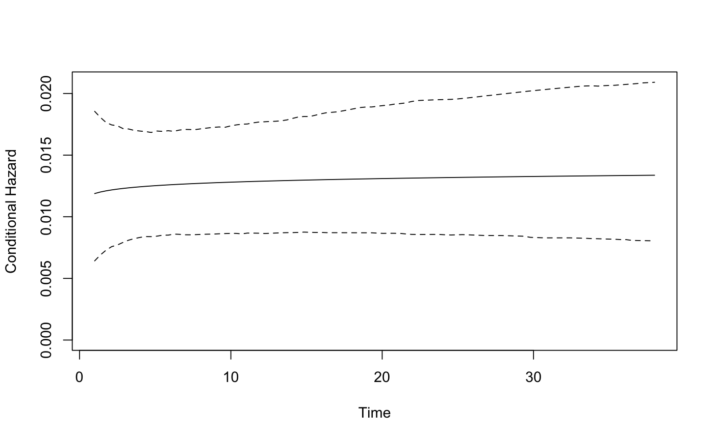
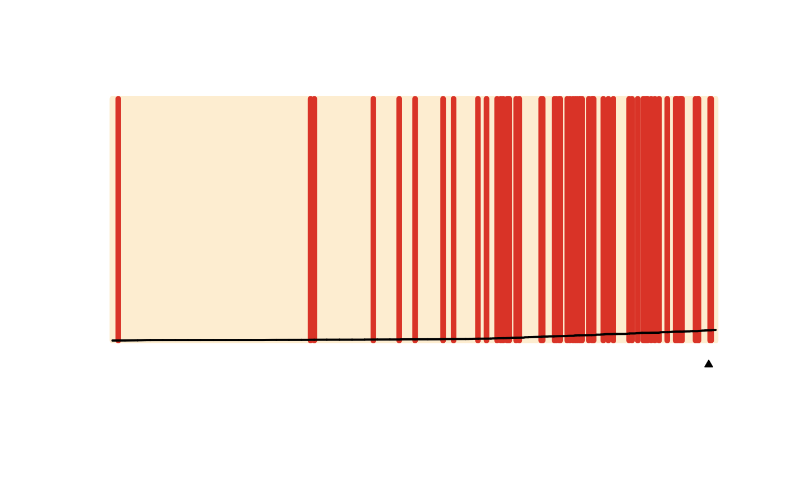

Plot results from a spduration model. Two types are currently implemented: a separation plot for evaluating model predictions ("sepplot"), and a plot of the conditional hazard rate ("hazard"), with or without simulation-based confidence intervals.
# S3 method for spdur plot(x, type = "sepplot", ci = TRUE, ...)
| x | An object of class " |
|---|---|
| type | What kind of plot? "sepplot" or "hazard". |
| ci | For plots of the hazard rate, should a confidence interval be included? |
| … | Optional parameters passed to |
plot(model.coups)